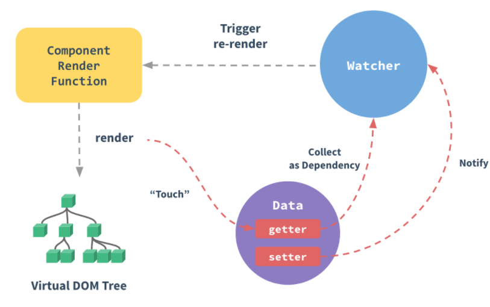
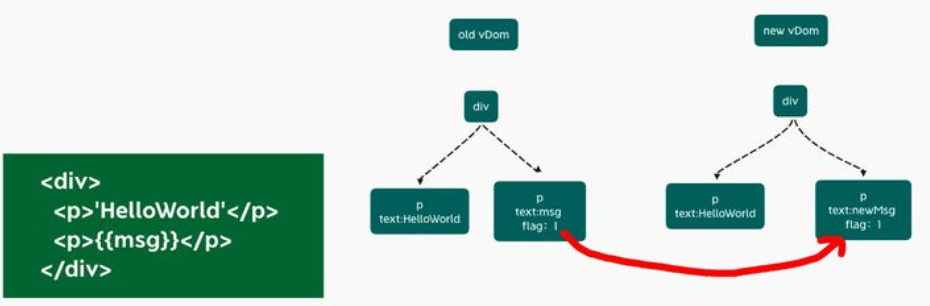

Vue3.0 性能提升主要是通过哪几方面体现的？
参考答案
一、编译阶段
回顾Vue2，我们知道每个组件实例都对应一个 watcher 实例，它会在组件渲染的过程中把用到的数据property记录为依赖，当依赖发生改变，触发setter，则会通知watcher，从而使关联的组件重新渲染

试想一下，一个组件结构如下图
<template>
<div id="content">
<p class="text">静态文本</p>
<p class="text">静态文本</p>
<p class="text">{{ message }}</p>
<p class="text">静态文本</p>
...
<p class="text">静态文本</p>
</div>
</template>可以看到，组件内部只有一个动态节点，剩余一堆都是静态节点，所以这里很多 diff 和遍历其实都是不需要的，造成性能浪费
因此，Vue3在编译阶段，做了进一步优化。主要有如下：
- diff算法优化
- 静态提升
- 事件监听缓存
- SSR优化
diff算法优化
vue3在diff算法中相比vue2增加了静态标记
关于这个静态标记，其作用是为了会发生变化的地方添加一个flag标记，下次发生变化的时候直接找该地方进行比较
下图这里，已经标记静态节点的p标签在diff过程中则不会比较，把性能进一步提高

关于静态类型枚举如下
export const enum PatchFlags {
TEXT = 1,// 动态的文本节点
CLASS = 1 << 1, // 2 动态的 class
STYLE = 1 << 2, // 4 动态的 style
PROPS = 1 << 3, // 8 动态属性，不包括类名和样式
FULL_PROPS = 1 << 4, // 16 动态 key，当 key 变化时需要完整的 diff 算法做比较
HYDRATE_EVENTS = 1 << 5, // 32 表示带有事件监听器的节点
STABLE_FRAGMENT = 1 << 6, // 64 一个不会改变子节点顺序的 Fragment
KEYED_FRAGMENT = 1 << 7, // 128 带有 key 属性的 Fragment
UNKEYED_FRAGMENT = 1 << 8, // 256 子节点没有 key 的 Fragment
NEED_PATCH = 1 << 9, // 512
DYNAMIC_SLOTS = 1 << 10, // 动态 solt
HOISTED = -1, // 特殊标志是负整数表示永远不会用作 diff
BAIL = -2 // 一个特殊的标志，指代差异算法
}静态提升
Vue3中对不参与更新的元素，会做静态提升，只会被创建一次，在渲染时直接复用
这样就免去了重复的创建节点，大型应用会受益于这个改动，免去了重复的创建操作，优化了运行时候的内存占用
<span>你好</span>
<div>{{ message }}</div>没有做静态提升之前
export function render(_ctx, _cache, $props, $setup, $data, $options) {
return (_openBlock(), _createBlock(_Fragment, null, [
_createVNode("span", null, "你好"),
_createVNode("div", null, _toDisplayString(_ctx.message), 1 /* TEXT */)
], 64 /* STABLE_FRAGMENT */))
}做了静态提升之后
const _hoisted_1 = /*#__PURE__*/_createVNode("span", null, "你好", -1 /* HOISTED */)
export function render(_ctx, _cache, $props, $setup, $data, $options) {
return (_openBlock(), _createBlock(_Fragment, null, [
_hoisted_1,
_createVNode("div", null, _toDisplayString(_ctx.message), 1 /* TEXT */)
], 64 /* STABLE_FRAGMENT */))
}
// Check the console for the AST静态内容_hoisted_1被放置在render 函数外，每次渲染的时候只要取 _hoisted_1 即可
同时 _hoisted_1 被打上了 PatchFlag ，静态标记值为 -1 ，特殊标志是负整数表示永远不会用于 Diff
事件监听缓存
默认情况下绑定事件行为会被视为动态绑定，所以每次都会去追踪它的变化
<div>
<button @click = 'onClick'>点我</button>
</div>没开启事件监听器缓存
export const render = /*#__PURE__*/_withId(function render(_ctx, _cache, $props, $setup, $data, $options) {
return (_openBlock(), _createBlock("div", null, [
_createVNode("button", { onClick: _ctx.onClick }, "点我", 8 /* PROPS */, ["onClick"])
// PROPS=1<<3,// 8 //动态属性，但不包含类名和样式
]))
})开启事件侦听器缓存后
export function render(_ctx, _cache, $props, $setup, $data, $options) {
return (_openBlock(), _createBlock("div", null, [
_createVNode("button", {
onClick: _cache[1] || (_cache[1] = (...args) => (_ctx.onClick(...args)))
}, "点我")
]))
}上述发现开启了缓存后，没有了静态标记。也就是说下次diff算法的时候直接使用
SSR优化
当静态内容大到一定量级时候，会用createStaticVNode方法在客户端去生成一个static node，这些静态node，会被直接innerHtml，就不需要创建对象，然后根据对象渲染
div>
<div>
<span>你好</span>
</div>
... // 很多个静态属性
<div>
<span>{{ message }}</span>
</div>
</div>编译后
import { mergeProps as _mergeProps } from "vue"
import { ssrRenderAttrs as _ssrRenderAttrs, ssrInterpolate as _ssrInterpolate } from "@vue/server-renderer"
export function ssrRender(_ctx, _push, _parent, _attrs, $props, $setup, $data, $options) {
const _cssVars = { style: { color: _ctx.color }}
_push(`<div${
_ssrRenderAttrs(_mergeProps(_attrs, _cssVars))
}><div><span>你好</span>...<div><span>你好</span><div><span>${
_ssrInterpolate(_ctx.message)
}</span></div></div>`)
}二、源码体积
相比Vue2，Vue3整体体积变小了，除了移出一些不常用的API，再重要的是Tree shanking
任何一个函数，如ref、reavtived、computed等，仅仅在用到的时候才打包，没用到的模块都被摇掉，打包的整体体积变小
import { computed, defineComponent, ref } from 'vue';
export default defineComponent({
setup(props, context) {
const age = ref(18)
let state = reactive({
name: 'test'
})
const readOnlyAge = computed(() => age.value++) // 19
return {
age,
state,
readOnlyAge
}
}
});三、响应式系统
vue2中采用 defineProperty来劫持整个对象，然后进行深度遍历所有属性，给每个属性添加getter和setter，实现响应式
vue3采用proxy重写了响应式系统，因为proxy可以对整个对象进行监听，所以不需要深度遍历
- 可以监听动态属性的添加
- 可以监听到数组的索引和数组
length属性 - 可以监听删除属性
关于这两个 API 具体的不同，我们下篇文章会进行一个更加详细的介绍
在Vue 3.0中，编译阶段和源码体积都得到了优化，同时响应式系统也经历了重大改进：
一、编译阶段优化
- diff算法优化：通过增加静态标记，Vue 3.0的diff算法只比较可能发生变化的部分，减少了不必要的比较，提高了性能。
- 静态提升：静态节点在渲染函数外部创建并复用，减少了重复创建节点的开销，优化了内存使用。
- 事件监听缓存：默认情况下，事件监听器会被缓存，避免了不必要的重复绑定，减少了性能开销。
- SSR优化：对于大量静态内容，Vue 3.0使用
createStaticVNode在客户端生成静态节点，通过innerHTML直接渲染，减少了对象创建和渲染的开销。
二、源码体积减小
- Tree shaking：得益于ES6模块的静态特性，Vue 3.0利用tree shaking技术，使得未使用的模块不会被包含在最终的打包文件中，从而减小了整体体积。
三、响应式系统改进
- Proxy API：Vue 3.0使用Proxy API替代了Vue 2中的
defineProperty，实现了更高效和全面的响应式系统。Proxy可以监听整个对象，而不需要深度遍历，支持动态属性添加、数组索引和长度变化，以及属性删除的监听。 - 性能提升：由于Proxy的引入，Vue 3.0的响应式系统在性能上有所提升，且更加灵活和可靠。